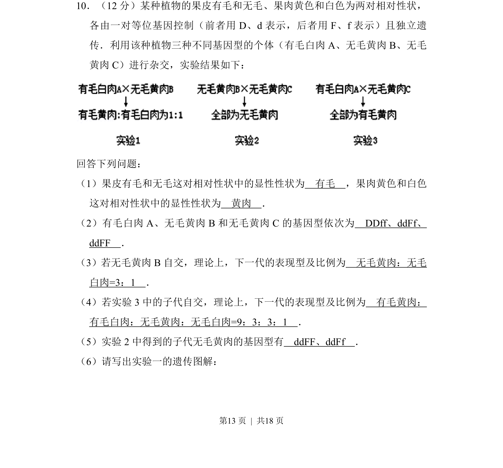
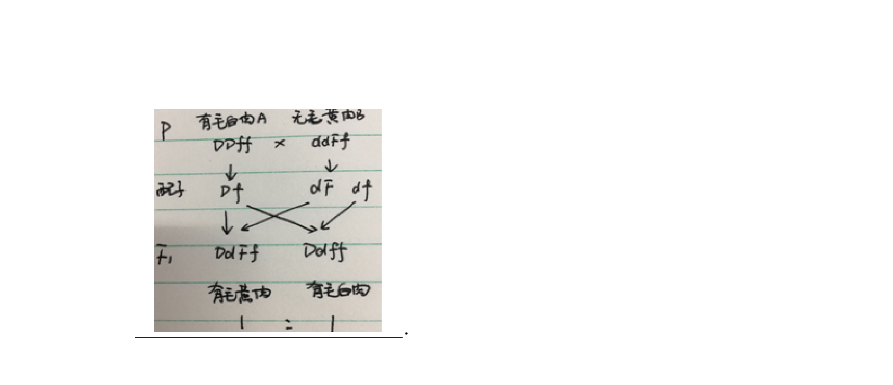
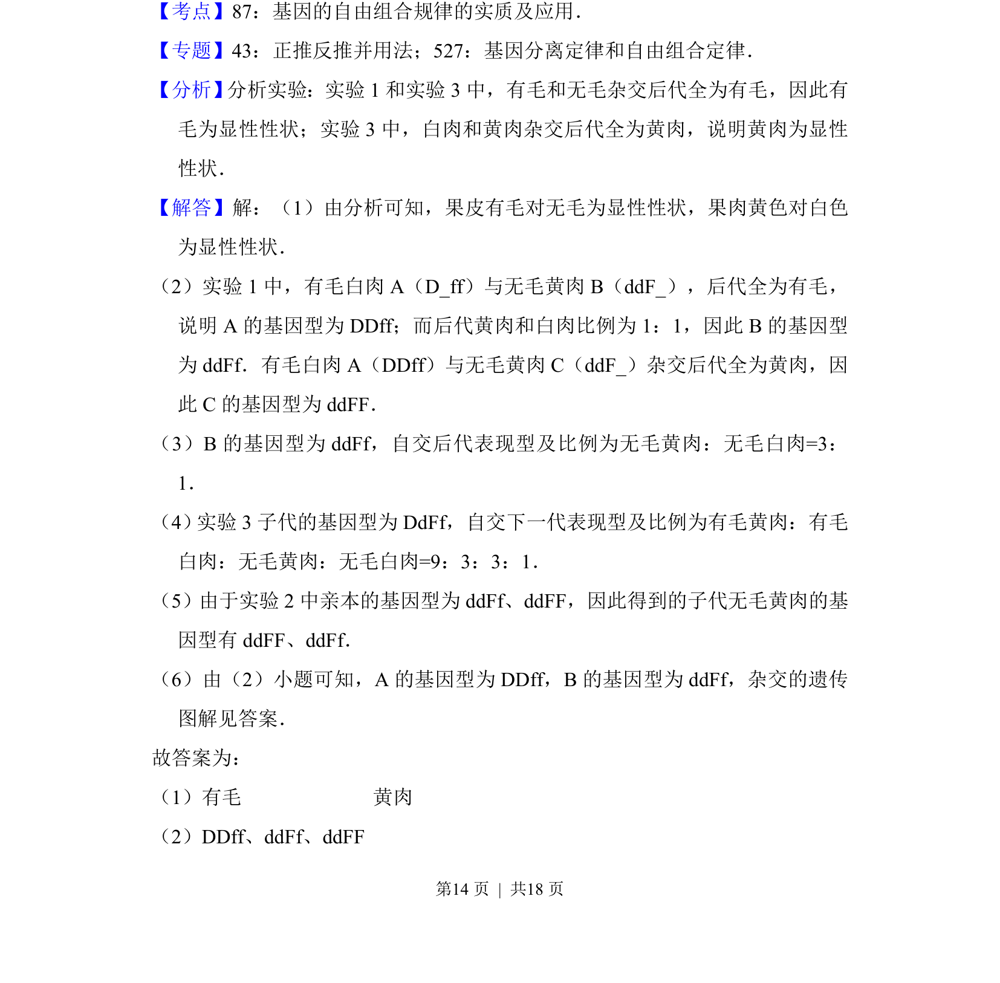
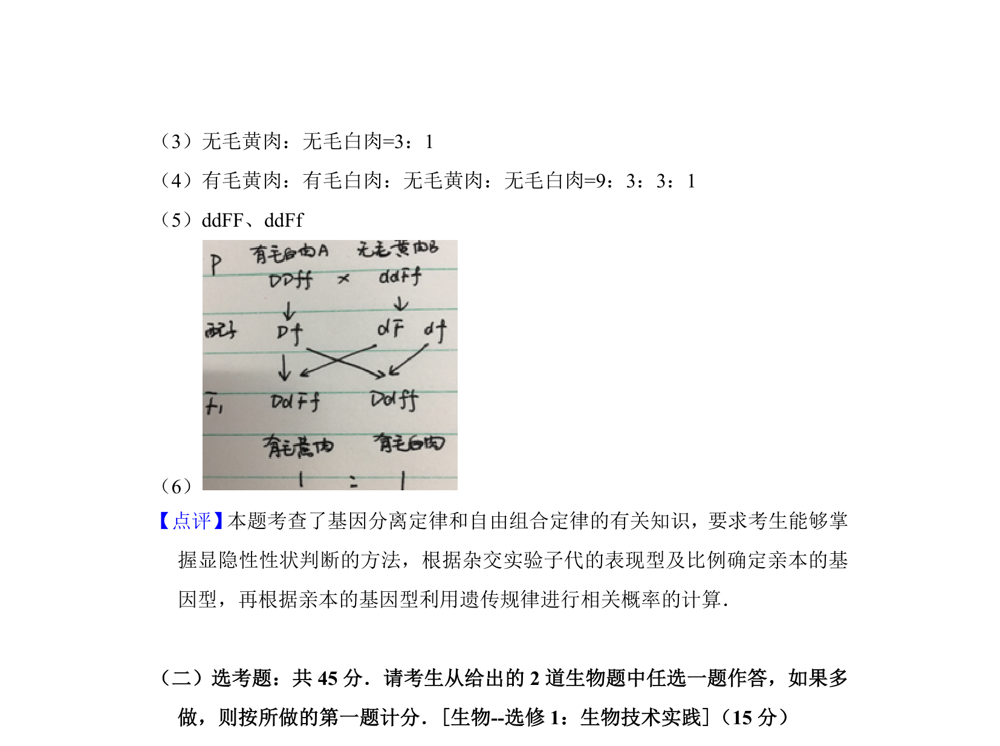

考点：自由组合定律 显隐性性状判断 基因型推断 杂交实验


考查基因自由组合定律的应用，包括显隐性判断、基因型推导、杂交实验分析及遗传图解书写。


📄 原 PDF 第 13 页：
素材/真题/吉林/2008-2024·（吉林）生物高考真题/2016年高考生物试卷（新课标Ⅱ）（解析卷）.pdf
10．（12分）某种植物的果皮有毛和无毛、果肉黄色和白色为两对相对性状， 各由一对等位基因控制（前者用D、d表示，后者用F、f表示）且独立遗 传．利用该种植物三种不同基因型的个体（有毛白肉A、无毛黄肉B、无毛 黄肉C）进行杂交，实验结果如下： 回答下列问题： （1）果皮有毛和无毛这对相对性状中的显性性状为 有毛 ，果肉黄色和白色 这对相对性状中的显性性状为 黄肉 ． （2）有毛白肉A、无毛黄肉B和无毛黄肉C的基因型依次为 DDff、ddFf、 ddFF ． （3）若无毛黄肉B自交，理论上，下一代的表现型及比例为 无毛黄肉：无毛 白肉=3：1 ． （4）若实验3中的子代自交，理论上，下一代的表现型及比例为 有毛黄肉： 有毛白肉：无毛黄肉：无毛白肉=9：3：3：1 ． （5）实验2中得到的子代无毛黄肉的基因型有 ddFF、ddFf ． （6）请写出实验一的遗传图解：